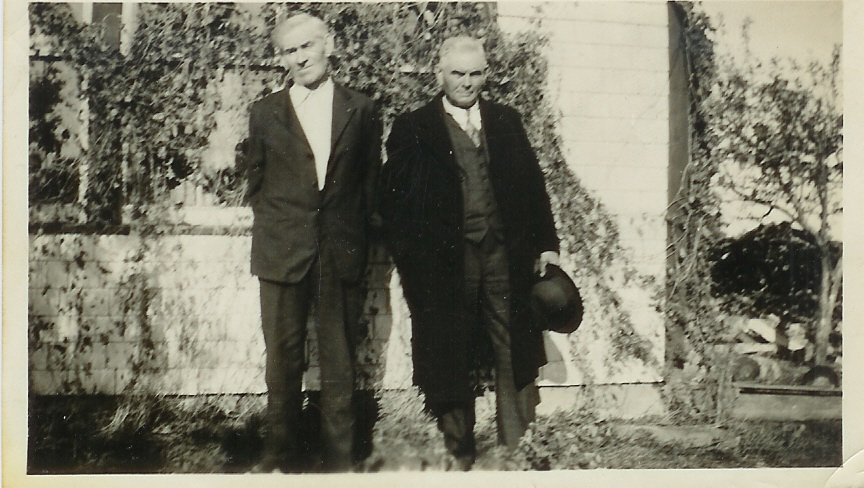

The Family Chronicle
No.70 May 23, 2004
__________________________________________________________________________________

The above photo, from Venetia’s collection, of my father, on the left, (1875-1938) and his brother Frank (1875-1937) was taken in front of our home at Little Branch on October 12, 1935. The front of the porch was always covered with vines. In the fall, when the seedpods were full, we would squeeze the pods until the seeds popped out at our target – usually one of my siblings.
Uncle Frank and Aunt Lil Glendenning
I checked with the Portland Library for an obituary. The library checked and found none but found the following death notice in the Portland Press Herald of May 28, 1937, p. 30:
"GLENDENNING--In Portland, May 25, John F. Glendenning. Aged 60 years. Funeral services Friday afternoon at 3:30 o'clock from Wilde Memorial Chapel, Evergreen Cemetery. Interment in Evergreen Cemetery."
Ken remembers the phone call telling that Uncle Frank had died. Uncle Frank worked, I believe, as yard foreman for the Grand Trunk Railways and, in fact,
died at work. Apparently he worked from a small building in the train yard and always stepped outside and waved to each passing crew. One day he did not appear and on investigation they found him dead.
Based on the above death notice, I phoned Evergreen Cemetery, and learned Aunt Lil’s death date (1874-1967).
I also learned that that their daughter, Bertha, (1905-1974) and her husband Clayton Crocker (- 1975) are also buried in Evergreen Cemetery as is Uncle Frank’s granddaughter, Joan Crocker, (1932-1994).
Aunt Lil lived with the Crockers after Uncle Frank died and Mum sometimes visited when traveling to Boston to visit Grace. Mum enjoyed Aunt Lil and spoke highly of Joan. A number of years ago while passing through Portland, I spoke on the phone with Joan. She was retired, had winterized the old family cottage at Sebago Lake and was living there. Joan’s brother, Frank, was married and lived in the Carolinas.
Black River Roads
A recent item in my local paper reminded me of the roads in Black river when the frost came out. I am sure that we can all tell our favourite stories.
Of course, prior to WW2, the roads were not paved and not even well graveled. That is understandable since most of the work was done by hand and with horses and wagons. Gravel had to be loaded onto wagons by hand and hauled by horse and wagon from the nearest pit. This could be a distance of a mile or more. I always thought that it was quite ingenious how wagon beds were made of small poles or narrow planks so that, when arriving at the spot where the gravel was to be dumped, the poles were lifted or the plank turned on edge to let the gravel fall through.
Working on the roads was a requirement by statute and was known as “statute labour” or more commonly as “stated labour”. Each resident put in so many days in lieu of taxes.
The only road equipment I can recall was a road scraper, which could be used to level gravel but also to open ditches along the side of the road. Teams of horses pulled these machines. Farmers often used a drag sled, sometimes known as a stone boat, with a steel blade along one side. The sled was dragged along the road smoothing out some of the hills and hollows. But I digress.
If one had to go in town or elsewhere, one usually did so early in the morning while the ground was frozen. One also arranged to be back home by 10 or 11 o’clock before the surface thawed.
The mud roads must have been hard on vehicles. I’ve seen the school bus traveling in the ruts with a wave of mud moving ahead of it. Sometimes one drove while straddling the ruts but one had to be careful not to get a front wheel in one rut and a back wheel in another.
It seems to me that even in the late 1940’s there was a very bad spot just below the Black River Hall and someone, (the Government?) stationed a truck there to haul vehicles through the hole.
Another bad spot I recall was on the Branch Road near the school gate. Seems to me that we got stuck there one Sunday morning on our way to church when Walter pulled too far to the right and the wheels of the car dropped into the ditch. And of course, the Point Aux Carr road was notorious.
Given that our place had the last phone on the NB Tel system (from there on it was the government phone line) in times of illness or death, it was not unusual for our household to be called on to relay messages. I recall once taking a message up Bay du Vin River on a very muddy and rutted road.
Older members of the family were frequently called jupon to harness the team and haul someone through a mud hole. One time, George Godfrey got stuck with his bus on the way to Chatham. I think that he could not make it up Ken’s Hill. John went with the team and hauled the bus up the hill.
The Chronicle is an occasional newsletter prepared by Don Glendenning and posted on the family website. It is designed to share information about my family, community and the times in which I grew up. While every effort is made to be accurate, errors are likely to occur. Comments, enquiries and information may be sent to 62 Queen Elizabeth Drive, Charlottetown, PEI, C1A 3A9. Tel: 902-892-5859 Email: don@glendenning.net Web: www.glendenning.net